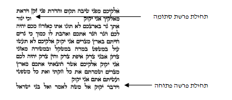
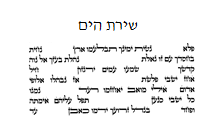
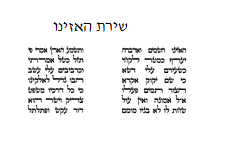
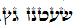
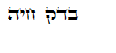

מצוות עשה מן התורה שכל יהודי יכתוב לעצמו ספר תורה, שנאמר (דברים לא, יט): "וְעַתָּה כִּתְבוּ לָכֶם אֶת הַשִּׁירָה הַזֹּאת", וכוונת התורה לצוות כל אחד ואחד מישראל שיכתוב לעצמו את כל התורה שכלולה בה שירת האזינו. ואפילו אדם שירש מאבותיו ספר תורה כשר, אינו יוצא בזה, אלא מצווה עליו לכתוב את התורה בעצמו (סנהדרין כא, ב). וכל המקיים מצווה זו, מעלה עליו הכתוב כאילו קיבל את התורה מהר סיני (מנחות ל, א).
מצווה מן המובחר שיכתוב בעצמו את התורה בדיו על קלף. אבל אם אינו יודע לכתוב, או שהוא טרוד במלאכתו ואין לו פנאי לכתוב את התורה, יכול לקיים את המצווה על ידי שישכור סופר שיכתוב עבורו את התורה וגם בזה יוצא ידי המצווה מן המובחר. אבל אם יקנה ספר תורה שכבר נשלמה כתיבתו, אע"פ שקיים את המצווה, לא קיים מצווה מן המובחר, שכן הספר נכתב שלא בשליחותו, ואמרו חכמים שהרי הוא כחוטף מצווה מן השוק. ולכן גם מי שאינו רוצה לטרוח בחיפוש הסופר אלא רוצה לקנות ספר מוכן, יקנה ספר שעדיין חסרות בו כמה אותיות, והסופר יכתבן בשליחותו ובזה יהיה שותף בהשלמת כתיבת התורה (מנחות ל, א; רש"י ונמוק"י, באור הגר"א ער, ג, ערוה"ש ער, ב; וע' רמ"א יו"ד ער, א).
שני טעמים עיקריים נאמרו למצווה זו. הראשון, בכתיבת התורה על הקלף בדיו, כמסורת המקובלת איש מפי איש עד למשה מסיני, יש משום המשכת התורה, וכפי שאמרו חז"ל שכל המקיים מצווה זו מעלה עליו הכתוב כאילו קיבל את התורה מהר סיני (מנחות ל, א).
הטעם השני, כדי שיהיו ספרי התורה מצויים אצל כל אחד מישראל, ויוכלו ללמוד בהם תמיד, למען יזכו לדעת את ה' ולקיים את מצוותיו. ואף אם ירש אדם ספר מהוריו, מכל מקום יתכן ויקשה עליו הלימוד בספר הישן, ועל כן ציוותה התורה שכל אחד יכתוב לעצמו ספר שבו ילמד כל ימי חייו. וכן כתב בספר החינוך (מצווה תריג).
בספר החינוך (מצווה תריג) מבואר שמצווה זו נוהגת בזכרים בלבד, שעיקר חיוב מצוות תלמוד תורה חל עליהם, אבל נשים פטורות מכתיבת ספר תורה.
אולם בספר 'שאגת-אריה' (ל"ה) כתב, שגם נשים מצוות שיהיה להן ספר תורה. ואף שידוע שהנשים פטורות ממצוות תלמוד תורה, זה דווקא לגבי הלימוד העיוני, התיאורטי, שאינו שייך באופן ישיר לחיים ולאמונה, אבל בלימוד ההלכות ויסודות האמונה והמוסר ברור שגם הנשים מצוּות, ולכן הן מברכות בכל בוקר את ברכות התורה. ועוד, שמצוות כתיבת ספר תורה אינה תלויה במצוות תלמוד תורה, אלא היא מצווה בפני עצמה, שכל יהודי יכתוב לעצמו את התורה, שנאמר (דברים לא, יט): "וְעַתָּה כִּתְבוּ לָכֶם אֶת הַשִּׁירָה הַזֹּאת", וכיוון שהמצווה מופנית כלפי כל ישראל - גם הנשים מצוּות בה.
ואמנם ספר תורה כשר חייב להיכתב על ידי גברים דווקא, כיוון שהוקשה כתיבת התורה לקשירת התפילין, שרק מי שקושר תפילין יכול לכתוב ספר תורה, וכיוון שנשים פטורות ממצוות התפילין, שהיא מצוות עשה שהזמן גרמה, אינן שייכות לכתיבת התורה (גיטין מה, ב; שו"ע יו"ד רפא, ג). מכל מקום כבר מצינו כיוצא בזה במצוות מזוזה, שנשים פסולות לכתוב מזוזה, וחייבות לקבוע מזוזה בביתן, וכך אפשר לומר שהן חייבות במצוות כתיבת ספר תורה, למרות שאינן כותבות אותו, אלא ישכרו סופר שיכתוב עבורן.
להלכה, דעת רוב רובם של הפוסקים שנשים פטורות ממצוות כתיבת ספר תורה (אג"מ יו"ד ח"א קסד, ועיין ערוה"ש ער, ו). ומכל מקום, אשה עשירה הרוצה לקיים את המצווה ולשכור סופר שיכתוב למענה ספר תורה - תבוא עליה ברכה.
כפי שלמדנו, מצוות עשה מן התורה לכל אדם מישראל לכתוב לעצמו ספר תורה או לשכור סופר שיכתוב עבורו את ספר התורה. אך כיוון שמחירו של ספר התורה גבוה ואין יכולת ביד רוב האנשים לממן כתיבת ספר תורה שלם, התעוררה שאלה, האם ניתן לקיים את המצווה בשותפות, באופן שמספר אנשים יתאגדו יחד על מנת שכל אחד יתרום סכום מסוים, וכך יממנו ביחד את כתיבתו.
לדעת הרבה מגדולי האחרונים אין יוצאים ידי המצווה בשותפות, מפני שהמצווה מופנית לכל אחד ואחד מישראל בנפרד שיהיה לו ספר תורה משלו, ואפילו אם ירש ספר תורה מאביו - מצווה שיכתוב בעצמו ספר תורה (פ"ת יו"ד ער, א; ערוה"ש ער, יא)
אמנם יש שכתבו שאם השותפות היא מלאה, היינו שלכל אחד יש חלק מסוים בספר תורה, יוצאים ידי חובה (אג"מ יו"ד א, קסג).
ובשעת הדחק, כאשר אין לאדם יכולת לממן לבדו כתיבת ספר תורה, מוטב שישתתף בתרומה למימון כתיבת ספר תורה, ויתנה, שבעבור תרומתו יהיה שותף בבעלות על ספר התורה.
עוד שאלה יסודית ישנה במצווה זו, האם כדי לקיים את המצווה די לכתוב ספר תורה, אבל אין צורך שאח"כ ספר התורה ישאר ברשות הכותב כל ימיו ויכול ליתנו במתנה לבית כנסת; או שהמצווה שיהיה לו ספר תורה, ולכן, רק בזמן שהספר בבעלותו הוא מקיים את המצווה.
לדעת ה'בית-יהודה' (ח"א יו"ד כ"ג) כל זמן שספר התורה נשאר בבעלותו הוא מקיים את המצווה, אבל אם נתן את הספר במתנה לציבור, אינו מקיים את המצווה. לעומת זאת דעת ה'בני-יונה' שהעיקר הוא לכתוב את התורה, ולכן גם אם הקדיש אח"כ את ספר התורה לציבור, כבר קיים בזה את המצווה. ואף אם הספר אבד או נשרף ח"ו, מסתבר שכבר יצא בו ידי מצוות כתיבת ספר תורה (פתחי תשובה יו"ד ער, ג).
למעשה, כיום, לאחר שהדפוס התפשט בעולם, אין לומדים בספר התורה המקודש הכתוב על קלף, וממילא אין צורך שספר התורה ישאר בבית, ולכן מן הראוי לתורמו לבית הכנסת לתועלת הציבור שיקראו בו. ומכל מקום, כדי לצאת ידי מצוות כתיבת ספר תורה לכל הדעות, מוטב שהספר ישאר בבעלותו, ויתנה עם הגבאים שאף שהם יכולים להשתמש בספר לכל צרכי הציבור, הוא ימשיך להיות בעל הספר כל ימי חייו.
למדנו שמצווה על כל אדם מישראל לכתוב ספר תורה בדיו על קלף, אלא שלא קל לקיים מצווה זו, מחירו של ספר תורה גבוה מאוד. ספר תורה בכתב ספרדי עולה קרוב למאה אלף שקלים (למעלה מעשרים אלף דולר), וספר תורה בכתב 'בית-יוסף' שהאשכנזים קוראים בו עולה כמאה ושלושים אלף שקלים (קרוב לשלושים אלף דולר). ההבדל במחירים נובע מכך שהכתב האשכנזי מהוקצע יותר וכתיבתו אורכת זמן רב. ברור אם כן שלרוב רובם של האנשים קשה מאוד לגייס סכום כזה. ואדם שירצה ללמוד לכתוב בעצמו את התורה, יצטרך ללמוד תחילה כתיבת סת"ם ולהתאמן בזה, ואח"כ לכתוב את כל התורה, וכל זה יארך לו זמן רב על חשבון פרנסתו והזמן המוקדש ללימוד תורה.
למעשה כתב הרא"ש (הל' ס"ת סי' א) בעניין מצווה זו, שמצוות עשה על איש מישראל אשר ידו משגת לכתוב ספר תורה, משמע שמי שאין ידו משגת פטור מן המצווה.
אכן בפועל אנו רואים שהרבה צדיקים וחסידים אינם מקיימים מצווה זו, וכנראה מפני שאין בכוחם לגייס את הסכום הנדרש למצווה.
אלא שבכל זאת עדיין אנו צריכים להגדיר יותר, עד כמה אדם צריך להשקיע מכספו כדי לקיים את מצוות כתיבת ספר תורה. כתב הרב פיינשטיין בספרו 'אגרות-משה' (יו"ד ח"א קסג), שלדעת רוב הפוסקים אין צריכים להוציא על המצווה הון רב, ואפילו עשירית מנכסיו אין חובה להוציא. ומי שרוצה להוציא למען כתיבת ספר תורה עשירית מנכסיו, עדיין רוח חכמים נוחה ממנו, אבל אם יוציא למען הכתיבה יותר מעשירית מנכסיו, אין רוח חכמים נוחה ממנו, שכן לא ישאר לו כסף למצוות אחרות כגון צדקה, תפילין וכיוצא בזה. שכן אמרו חכמים, שאין להוציא עבור המצוות יותר מחמישית מנכסיו, שמא יפשוט את הרגל ויצטרך לבריות.
ולפי זה רק אדם עשיר, שעלות כתיבת ספר התורה היא פחות מעשירית מרכושו הפנוי, מצווה עליו לכתוב ספר תורה, אבל מי שמחיר הספר קרוב לעשירית מרכושו הפנוי, פטור מן המצווה.
כדי להגדיר את מצוות כתיבת ספר התורה יש להקדים ולציין ששינוי משמעותי חל במשך הזמן במעמדו של הספר בישראל. מתחילה, רק את התורה שבכתב היה מותר לכתוב, היינו את עשרים וארבעה ספרי התנ"ך. והיו כותבים את התנ"ך בדיו על הקלף על פי כללי הלכה מדוקדקים. ואילו את התורה שבעל פה אסור היה לכתוב, כדי שתהיה חיה בלבבות ושמורה בזיכרון. אולם לאחר שהתמעטו הדורות, והעם החל להתפזר לגלויות השונות, ראו חכמי ישראל כי אין ברירה, וכדי לקיים את התורה יש הכרח להתיר את כתיבת התורה שבעל פה, וכך נכתבה המשנה ואחריה התלמוד הירושלמי, התלמוד הבבלי, המדרשים, הפירושים ופסקי ההלכות. וכיון שהתירו לכתוב את התורה שבעל פה, התירו לכתוב גם את התנ"ך שלא על הקלף, באופן שמחיר הכתיבה יהיה זול יותר, ויוכלו יותר אנשים לרוכשו. ועדיין היו הספרים יקרים מאוד, מפני שהיו כותבים אותם בכתב יד. לפני כמה מאות שנים נתחדש הדפוס בעולם והספרים נעשו זולים, וכתוצאה מכך, יותר אנשים יכולים כיום להרשות לעצמם לקנות ספרים.
השאלה המרכזית היא, מה המשמעות של הציווי לכתוב את התורה. האם הכוונה לכתוב את הספר המקודש על הקלף בדיו, או שהכוונה לכתוב את התורה כדי שאפשר יהיה לכל יהודי ללמוד בה. נחלקו בזה גדולי הראשונים:
לדעת הרמב"ם, עיקר המצווה שכל יהודי יכתוב לעצמו את הספר המקודש על קלף בדיו, וכך יתקשר באופן אישי אל מעמד הר סיני. ולכן גם כיום שהלימוד מתוך ספרים מודפסים, על פי דעת הרמב"ם, מצוות כתיבת ספר התורה על קלף נשארה במקומה.
אולם לדעת הרא"ש (הל' ס"ת א'), עיקר מגמת המצווה שכל יהודי יוכל ללמוד את התורה. ולכן כיום שמניחים את ספר התורה המקודש בבית הכנסת, ולומדים מתוך ספרים רגילים, מצוות עשה על כל יהודי לקנות חמישה חומשי תורה, משנה, תלמוד ומפרשיהם, כדי שיוכל להגות בהם הוא ובניו. כלומר לדעת הרא"ש, עיקר מגמת מצוות כתיבת ספר תורה - לסייע ללימוד, ואם כן, לאחר שהותר לכתוב את התורה על נייר, וכן הותר לכתוב את התורה שבעל פה, המצווה כיום היא לקנות ספרי קודש לצורך הלימוד.
רוב המפרשים ביארו, שלמרות שעיקר המצווה כיום לקנות ספרי קודש ללימוד, מכל מקום מודה הרא"ש שמצווה על כל מי שיכול - לכתוב את ספר התורה המקודש בדיו על קלף (ב"י, ב"ח, ט"ז). ויש מפרשים שביארו, שלדעת הרא"ש אין כיום מצווה על כל יהודי לכתוב לעצמו ספר תורה על קלף, משום שממילא לא ילמד בספר הזה, ובמקום זה מוטלת על כל אחד מישראל מצווה לקנות לעצמו את כל ספרי היסוד התורניים. ורק הציבור צריך לדאוג לכך שיהיו לו ספרי תורה לקריאה בציבור (דרישה וש"ך).
למעשה נפסקה הלכה כשתי השיטות, שיש מצווה על כל יהודי שידו משגת לכתוב את ספר התורה המקודש בדיו על קלף, ועם זאת מצווה על כל יהודי לקנות לעצמו את כל ספרי היסוד התורניים, כגון תנ"ך, משנה, תלמוד, 'שולחן-ערוך', ועוד ספרי הלכה, מוסר ואמונה. (לעניין מכירת ספר תורה עבור תלמוד תורה ונישואין, עיין פניני הלכה ליקוטים חלק ד' ב, ה).
את כל כתבי הקודש, ספרי תורה, תפילין ומזוזות, כותבים על עורות של בעלי חיים, ואם כתבם על נייר או על בד או שאר חומרים - פסולים. ודבר זה הוא הלכה למשה מסיני (שבת עט, ב). וחומר זה הוא הנעלה ביותר, שכל הניירות עשויים ממיני הצומח, ואילו הקלף של ספר התורה נעשה ממין החי, שהוא במדרגה אחת למעלה מהצומח.
ודווקא על עורות של בעלי חיים טהורים, בהמות, חיות או עופות, אבל על עור של חיות טמאות שאסורות באכילה - אסור לכתוב את כתבי הקודש. שכן נאמר (שמות יג, ט): "לְמַעַן תִּהְיֶה תּוֹרַת ה' בְּפִיךָ", ולמדו חז"ל, שרק על עורו של מין הכשר לאכילה כותבים כתבי קודש. ואפילו בהמה שלא נשחטה כהלכה ובשרה אינו כשר לאכילה, אם היא ממין טהור - מותר לכתוב על עורה כתבי קודש, שכן הולכים אחר המין ולא אחר כשרותה של אותה בהמה שממנה נטלו את העור. ועל עור של דגים, אפילו אם הם כשרים לאכילה, אין כותבים כתבי קודש, מפני שיש בהם זוהמא (שבת קח, א). לסיכום: מותר לכתוב תורה, תפילין ומזוזות על עור של בהמה או חיה או עוף טהורים, ומטעמי נוחות נוהגים כיום לכתוב על עורות של בהמות.
את העור צריכים לעבד. וכיצד מעבדים? נותנים את העור בסיד או בחומר אחר ששואב מן העור את כל המיצים והחומצות, ועל ידי כך העור יכול להתקיים מאות שנים. בלא העיבוד, העור ירקב תוך זמן קצר.
את העיבוד צריכים לבצע לשם כתיבת התורה, ואם העור לא עובד לשמה, הקלף פסול לכתיבת כתבי קודש. ואפילו אם העור עובד לשם כתיבת תפילין, הרי הוא פסול לכתיבת תורה, מפני שהתורה מקודשת מתפילין. ולכן נוהגים לעבד את כל העורות לשם קדושת תורה, ואז אם ירצו יוכלו לכתוב עליו גם תפילין ומזוזות (שו"ע או"ח לב, ח; מ"ב כו).
אחד הרמזים הטמונים בהלכה זו, שהעור מבטא את החיצוניות, וכן בעלי החיים מבטאים את החומריות הגסה נטולת הדעת. ייעודה של התורה לתקן ולרומם את עולם החומר החיצוני, ועל כן התורה נכתבת על עור של בעלי חיים, ובזה היא מגלה לנו שאין דבר בעולם שמנותק מהאידיאל הגדול של התורה. ואפילו הצדדים הנמוכים והחיצונים של העולם, כדוגמת עורות הבהמות, יתרוממו אל ייעודם על ידי התורה הקדושה.
עוד צריך לדעת, שהעור השלם של הבהמה לאחר עיבודו נקרא גוויל, ומותר לכתוב עליו ספרי תורה ומזוזות, ובתנאי שיכתבו על הצד החיצון שלו, היינו על הצד שעליו היה השער של הבהמה. ואם חולקים את העור השלם הנקרא גוויל לשני חלקים, הצד החיצוני נקרא קלף, והפנימי דוכסוסטוס. הקלף כשר לכתיבת כל כתבי הקודש: תורה, תפילין ומזוזות, ובתנאי שיכתבו על הצד הפנימי שלו. אולם הדוכסוסטוס כשר לכתיבת מזוזות בלבד, וכותבים על הצד שהיה מחובר לקלף בלבד. ואם שינה, כגון שכתב את התפילין על הגוויל, או תורה או תפילין על דוכסוסטוס, או שינה וכתב על הצד השני של הקלף או הגוויל או הדוכסוסטוס - פסול. והלכות אלו נאמרו למשה מסיני (רמב"ם הלכות סת"ם א, ח-ט).
שאלה גדולה התעוררה בתקופת האחרונים, מה דינם של הקלפים המשוחים. סופרים רבים נהגו למשוח את הקלף במין משיחה לבנה, שהיתה מייפה את הקלף ומקילה על משיכת הקולמוס, וכך הכתב היה יוצא יפה יותר, והכתיבה קלה ומהירה.
אלא שהתעוררה שאלה, שמא המשיחה הזו מהווה חציצה בין הדיו לקלף.
בשו"ת 'פנים-מאירות' (ח"ג לב) כתב שמצווה לכתוב על קלף משוח, משום שעל ידי כך הכתיבה מהודרת יותר, וכל דבר שבא לייפות את הכתיבה אינו חוצץ. אך לעומתו כתב בספר 'בני-יונה', שהמשיחה הזו מהווה חציצה, ועל כן, אם כשיקלפו את המשיחה הדיו יפול - הספר פסול, אבל אם הדיו עובר דרך המשיחה הלבנה ונספג בקלף, כך שגם אם יקלפו את המשיחה ישארו האותיות על הקלף - הספר כשר (פתחי תשובה יו"ד רעא, ג).
בנוסף לכך ישנה עוד בעייה, שאם משחו שכבה עבה, היא נוטה להתפורר במשך הזמן, ועם התפוררותה גם האותיות מתבקעות ונופלות. ולכן כתב ב'שערי-תשובה' (או"ח לב, ו) שיש להעביר מטלית ולקנח היטב את הקלף, שאז מה שאינו מודבק היטב בקלף יסור, ומה שנשאר מהמשיחה הלבנה דבוק על הקלף, נעשה גוש אחד עם הקלף ואינו חוצץ. גם המקילים מסכימים כי לכתחילה יש להיזהר שלא למשוח את הקלף בשכבה עבה.
למעשה, כיוון שהדבר שנוי במחלוקת, מן הראוי לכתחילה להחמיר שלא להשתמש בקלפים משוחים (קסת הסופר ב, יב). אמנם במקום שיש ספר תורה משוח - אין להימנע מלקרוא בו ולברך עליו (יחו"ד ח"ו נה, אבל בתפילין נכון להחמיר).
הלכה למשה מסיני לכתוב את התורה, התפילין והמזוזות בדיו. והיו עושים את הדיו מעשן שמנים, ומערבים אותו בשרף אילן, ויש שהיו מערבים גם מי עפצים וגומא. ולדעת ר"ת יש להקפיד לעשות את הדיו מחומרים מסוימים (עיין בשו"ע או"ח לב, ג, ובבאור הלכה שם שיש דעות מהם החומרים המעכבים).
אולם דעת הרמב"ם, שאמנם מלכתחילה יש להשתמש בחומרים הנזכרים, אבל מן הדין כל חומר כתיבה שחור - כשר, שזוהי כוונת ההלכה, ללמדנו שהכתיבה צריכה להיות בצבע שחור ולא ירוק או אדום או אפור (הל' סת"ם א, ד-ה).
לעיתים קורה בספרי תורה ישנים, שהצבע השחור שלהם דוהה ונוטה מעט לגוון אפור-אדמדם. לדעת ה'פרי-מגדים' כיוון שהצבע אינו שחור הוא פסול, אך לעומתו ה'חתם-סופר' פסק, שמאחר שהספר נכתב בדיו כשר, וכך היא דרכו של הדיו, שבמשך הזמן הוא מקבל גוון אדמדם - הספר כשר (מ"ב לב, קכח).
הלכה למשה מסיני שצריך לשרטט את השורות על גבי הקלף לפני הכתיבה, וכך יצא הכתב ישר ונאה. נוהגים לשרטט בחרט חריץ דק, ואין משרטטין בעופרת או בצבע. ואם כתב בלא שרטוט, אפילו אם כתב ישר - הספר פסול (רמב"ם הל' סת"ם א, יב; שו"ע יו"ד רעא, ה).
צריך לכתוב ביד ימין, שכך היא דרך כתיבה, וכן למדו לגבי תפילין 'וקשרתם' 'וכתבתם', שקשירת התפילין וכתיבתן תיעשה באותה יד, וכיוון שמניחים תפילין על יד שמאל, ממילא קושרים אותן ביד ימין, וממילא גם כתיבתם כקשירתם ביד ימין. והושווה דין ספר תורה ומזוזה לתפילין. ואם כתב ביד שמאל, ספר התורה פסול. איטר יד, יכתוב ביד שמאל, שזו היד שבה הוא רגיל לכתוב, והיא היד שבה הוא קושר את התפילין (שו"ע יו"ד רעא, ז; או"ח לב, ה).
לפני תחילת הכתיבה צריך הסופר לומר: "ספר זה אני כותב לשם קדושת ספר תורה", ואמירה זו מספיקה לכל הספר (שו"ע יו"ד רעד, א). וטוב שיוסיף ויאמר: "וכל אזכרות שבו לשם קדושת השם". ואע"פ שאמר כך בתחילת הכתיבה, בכל פעם שיבוא לכתוב שם השם, צריך לומר בפירוש, שהוא כותב את השם לשם קדושת השם. ואם לא אמר את הכוונה לפני כתיבת כל שם, הספר פסול. וכתב הט"ז (יו"ד רעו, א), שמכל מקום אם חשב בעת כתיבת השם שהוא כותבו לשם קדושה, ובתחילת כתיבת הספר אמר במפורש שכל האזכרות שבו יכתוב לשם קדושת השם, בדיעבד, למרות שלא הוציא מפיו בעת כתיבת השם את הכוונה, הכתיבה כשרה.
אחד הפלאים שבתולדות ישראל הוא המסורת המדוייקת של ספר התורה, שלמרות כל השינויים במנהגים ובאורחות החיים בין כל קהילות ישראל, ספרדים, אשכנזים ותימנים, מסורת כתיבת ספר התורה נשארה אחידה. זאת למרות שספרי התורה הועתקו במשך אלפי שנים ספר מספר, במקומות שונים בעולם, תוך כדי נדודים מגלות לגלות, אע"פ כן כל הספרים שווים בסדר המילים והאותיות, ואף במסורת הטעמים והנקודות לא נפלו שינויים. אין זאת אלא מפני החשיבות העצומה שמייחסת ההלכה לדיוק בכתיבת התורה, שכל ספר תורה שחסרה בו אות אחת, או נוספה בו אות אחת - כולו פסול. ואפילו אם שינוי האות אינו משנה את נוסח הקריאה, כגון שבתורה כתובה מילה בכתיב חסר והסופר כתבה בכתיב מלא - ספר התורה פסול (מנחות כט, ב).
וכן מסופר במסכת עירובין (יג, א) שאמר רבי ישמעאל לרבי מאיר שהיה סופר: "בני, הוי זהיר במלאכתך, שמלאכתך מלאכת שמים היא, שמא אתה מחסר אות אחת או מייתר אות אחת, נמצאת מחריב את כל העולם כולו". ומבאר המהר"ל מפראג (תפארת ישראל סו), שהשורש הרוחני של העולם הוא התורה, כמו שאמרו חז"ל (בראשית רבה א) שהקב"ה הסתכל בתורה ועל פיה ברא את העולם, נמצא שאם ישנה אות אחת יפגע בשורש הרוחני של העולם, ומתוך כך יגרום לחורבן.
וצריך הסופר שיהיה לפניו ספר אחר שיעתיק ממנו, שאסור לכתוב אות אחת שלא מן הכתב, וצריך שיקרא כל תיבה בפיו קודם שיכתבנה (שו"ע יו"ד רעד, ב). על ידי שיטת כתיבה כזו, נמנעות טעויות רבות.
וכן נפסקה הלכה, שאסור להשהות ספר שיש בו טעות יותר משלושים יום, אלא יתקן או יגנוז, שנאמר (איוב יא, יד): "וְאַל תַּשְׁכֵּן בְּאֹהָלֶיךָ עַוְלָה" (כתובות יט, ב; שו"ע יו"ד רעט, א).
ואם נמצאו בספר תורה שלוש טעויות, אין מועיל לתקן אותן בלבד, אלא צריך לבדוק ולהגיה מחדש את כל הספר, שהואיל ונמצאו בו שלוש טעויות, הורעה חזקתו, ויש לבדוק מחדש אם נכתב כהלכה (שו"ע יו"ד רעט, ג; ועיין עוד בהלכה טו הרחבה בדין זה).
כפי שלמדנו, ספר שיש בו טעות באות אחת, כולו פסול. ולמרות הדיוק המופלא שבהעתקת התורה, דיוק שאין דומה לו בשום עם ולשון, בעקבות הגלויות נפלו שינויים מעטים בין המסורות השונות.
בחומש בראשית (ט, כט) בספרי התורה הספרדיים והאשכנזיים כתוב: "וַיְהִי כָּל יְמֵי נֹחַ", ואילו בספרי התורה התימניים כתוב: "וַיִּהְיוּ כָּל יְמֵי נֹחַ".
וכן בדברים (כג, ב), בספרים הספרדיים ורוב ספרי תורה האשכנזיים, כתוב: פצוע 'דכה' ב'ה'. ולמסורת תימן, וכן בכמה ספרי תורה ישנים מאשכנז, כתוב: 'דכא' ב'א'.
וכן בספר ויקרא פרשת צו, לפי המסורת הרווחת ברוב ישראל בפרק ז' פסוק כ"ח מתחילה פרשה פתוחה, ולמסורת תימנים ועוד מסורות הפרשה מתחילה לפני כן בפרק ז' פסוק כ"ב (עי' ש"ך יו"ד רעה, ו).
הכלל היסודי הוא שבשאלה זו בעלי המסורה הם הקובעים. בעלי המסורה אלו הסופרים הדייקנים שהיו סופרים את האותיות שבתורה ומדקדקים בלשונה. ולכן אף אם ישנו מדרש שעל פיו משמע שהגירסה שונה מהגירסה שלפנינו, הלכה כבעלי המסורה. אולם עדיין נותרה שאלה, כיצד צריכים הסופרים לנהוג באותם השינויים שבעלי המסורה נחלקו בהם.
הרמב"ם כתב שהספר עליו הוא סומך, הוא הספר הידוע במצרים, שהיה לפני כן בירושלים וממנו הגיהו את הספרים, ועליו היו הכל סומכים, לפי שהגיהו בעל המסורה המפורסם בן אשר, ודקדק בו שנים, והגיהו פעמים רבות (הלכות ס"ת ח, ה). כלומר לדעת הרמב"ם ישנה גירסה אחת שהיא הנכונה ועל פיה צריכים לכתוב את כל הספרים, וכל המשנה ממנה, ספרו פסול.
לפי מסורת הקהילה החלבית, הספר המפורסם שעליו דיבר הרמב"ם, הוא 'כתר-ארם-צובא'. למרבה הצער כיום אין בידינו אלא חלקים מ'כתר-ארם-צובא', אולם ישנם ספרים רבים שהועתקו ממנו, ועל פי השוואת הספרים השונים, נמצא כי ספרי התימנים הם הקרובים ביותר לנוסח המקורי שעליו דיבר הרמב"ם.
אולם צריך לדעת שכמה מגדולי הראשונים חלקו על הרמב"ם, וכבר בזמנו סברו שאין להעדיף את מסורת בן אשר על פני המסורות האחרות, וכל מסורת מוסמכת שכתבו על פיה במשך שנים רבות ספרים רבים, יש לה מקום, והכותב על פיה ספרו כשר (תשובות הרשב"א המיוחסות לרמב"ן רלב, המאירי קידושין ל, א, שו"ת מהר"י מינץ פיורדא תקכו).
למעשה, לגבי הקריאה בתורה, מוסכם על הכל, שכל ספר שנכתב על פי אחת מן המסורות המוסמכות, מותר לקרוא בו בתורה בברכה.
הסופר צריך לדקדק בכתיבתו שתהיה ברורה ונאה, שצריך לעשות את המצוות באופן נאה ומהודר, שנאמר (שמות טו, ב): "זֶה אֵלִי וְאַנְוֵהוּ", ודרשו חז"ל: "התנאה לפניו במצוות" (שבת קלג, ב). וכן הדין לגבי כתיבת תפילין ומזוזות. ובכלל צריך לדעת, שדיני כתיבת ספר תורה, תפילין ומזוזות שווים (ועיין להלן ט, יד).
לכל הפחות צריך הסופר להיזהר לכתוב כל אות כצורתה, כך שלא תהיה כל אפשרות לטעות בקריאתה. ואם התעורר ספק לגבי אות אחת, כגון שצריך לכתוב 'ו' וכתב אות שנראית מעט כ'ו' ומעט כ'י', ישאלו תינוק שאינו חכם במיוחד ואינו טיפש, שרק עתה למד לקרוא אותיות ועדיין אינו רגיל בקריאת מילים שלימות ומשפטים, וישאלוהו איזו אות הוא רואה. אם יאמר שהיא 'ו' - הספר כשר, ואם יאמר שהיא 'י' - הספר פסול. וסומכים עליו, מפני שהקטן מתבונן באותיות בתמימות ללא הבנת ההקשר, ולכן הוא יכול לקבוע איזו אות היא.
וכן צריך להניח רווח בין מילה למילה בשיעור של אות קטנה, ואם הצמיד שתי מילים זו לזו, עד שיש ספק שמא שתי המילים נראות כמילה אחת, מבקשים מתינוק לקרוא. אם יקראנה כמילה אחת - פסול, ואם כשתי מילים - כשר. וכן להיפך, אם השאיר הסופר רווח באמצע מילה, יבקשו מתינוק לקרוא, ואם יקראנה כשתי מילים - הספר פסול.
עוד צריך הסופר להיזהר שלא תדבק אות לחברתה, שהלכה היא, שכל אות צריכה להיות מוקפת בלובן של הקלף, ואם נדבקה אות אחת לחברתה, או שהגיעה עד לקצה הקלף, כיוון שאינה מוקפת בלובן של הקלף במקום הדיבוק או במקום שהגיעה לקצה הקלף - הספר פסול.
רמז יש בהלכה זו: האותיות השחורות מסמלות לגבינו את כל מה שאנו מכירים ומבינים, את כל מה שאפשר לבטא ולהסביר, ולכן אנו מסוגלים לכתוב ולהביע רעיונות אלו באמצעות האותיות. אבל יש גם רעיונות עמוקים עליונים שאי אפשר לבטאם, הם כל כך עמוקים עד ששום מילה ושום אות לא יוכלו להכילם ולבארם. אך יחד עם זאת, אנו יודעים שהם קיימים, והם משפיעים על חיינו. הקלף הלבן המקיף כל אות, הוא המבטא את אותם הרעיונות הגבוהים שאינם ניתנים לביטוי. ומתוך הקלף הלבן, מתגלה ומופיעה לעינינו האות השחורה, מתוך מה שמעל ההכרה, מתגלים אלינו רעיונות מוכרים וברורים. וזהו יסודה של התורה, מקורה שמימי ועליון, והיא יורדת עד לחיים היום יומיים שלנו (ע' לקוטי תורה לאדמוה"ז שה"ש מו, ג; דרך מצוותיך לצמח צדק, מצוות תפילין ב).
במסורת כתיבת התורה ישנה חלוקה לפרשיות. הרווח שצריך להיות בין שתי פרשיות הוא כשיעור כתיבת תשע אותיות. יש פרשיות פתוחות ויש סתומות. לפני תחילת פרשה פתוחה הרווח מגיע עד לסוף השורה, והפרשה הפתוחה מתחילה בתחילת השורה הבאה. ובפרשיות סתומות, הרווח נמצא באמצע השורה. כלומר, בתחילת השורה מסיימים את הפרשה הקודמת, ומפסיקים כשיעור כתיבת תשע אותיות, וממשיכים וכותבים את תחילת הפרשה הסתומה.

ולפי מה שלמדנו, שהקלף הלבן רומז לעולם הנסתר שממנו נובעים הרעיונות שמתגלים אלינו באותיות התורה, ממילא מובן, שלפני כל פרשה ופרשה יש השראה עליונה מן העולם הנסתר, ומתוך אותה השראה מתגלה אלינו הפרשה הבאה. את ההשראה הזו מבטא הרווח שבין הפרשיות.
ישנו עוד סוג של כתיבה שיש בו רווחים גדולים בין המילים, והוא בכתיבת השירות. וישנם שני סוגים של שירות. בשירת הים הכתיבה היא 'אריח על גבי לבינה', היינו בכל שורה סדר הכתיבה והרווחים שונה, כך שמתחת לכל כתיבה ישנו רווח, ומתחת לכל רווח ישנה כתיבה. והסוג השני הוא כמו בשירת האזינו, 'אריח על גבי אריח, ולבינה על גבי לבינה', ששם כותבים בשני צידי השורה ומשאירים רווח באמצע.
 ושוב על פי מה שלמדנו, הרווח מסמל את ההשראה העליונה המקיפה את מחשבתנו מלמעלה. וכיוון שהשירה באה לבטא רעיון גבוה מאוד, ישנו צורך ברווחים רבים ושיטתיים בתוך הכתיבה, רווחים שיתנו להשראה המקיפה העליונה לבוא לידי ביטוי.
ואם שינה ולא הפסיק בין פרשה לפרשה, או שעשה הפסקה של פתוחה לפני סתומה או להיפך, או שכתב את השירה כשאר כתיבות, או שכתב את שאר התורה כפי שכותבים שירה, הספר פסול (שו"ע יו"ד רע"ה א-ה). והלכות אלו מקורן קדום בהלכה למשה מסיני.
עוד קבעו חכמים כללים בכתיבת התורה שנועדו לעיצוב הכתיבה ביחס לכתיבה עצמה וביחס לקלף.
רוחב כל עמודה צריך להיות כשיעור כתיבת שלושים אותיות, והמרחק בין שורה לשורה כשיעור שורה אחת. בין תחילת הקלף ועד תחילת הכתיבה יהיה מרחק כשיעור ג' אצבעות (ששה ס"מ), ומסוף הכתיבה ועד תחתית הקלף ד' אצבעות (שמונה ס"מ). בין עמודה לעמודה יהיה רווח של שתי אצבעות (ארבעה ס"מ), ובין חומש לחומש יהיה רווח של ארבע שורות ריקות. וכל אלו הדברים מצווה, אך אם שינה - כשר (שו"ע יו"ד רע"ב -רע"ג).
מסורת התורה שבכתב כוללת בתוכה ארבעה מרכיבים. המרכיב הראשוני והיסודי ביותר הן כמובן אותיות התורה, ואם שינה בכתיבת אות אחת מאותיות התורה, הספר כולו פסול.
המרכיב השני הוא התגים, כמבואר במסכת מנחות (כט, ב), ששבע אותיות צריכות תיוג, ואלו הן: שעטנ"ז ג"ץ. והכוונה שמעל גג אותיות שעטנ"ז ג"ץ מציירים שלושה תגים דקים מאוד, אחד נוטה לימין ואחד לשמאל והשלישי באמצע, וצורת כל אחד מהם כצורת אות 'ז' קטנה ודקה מאוד, כזה:
אם שכח ולא כתב את התגים באותיות אלו, לדעת כמה פוסקים הספר פסול (ב"ח טור ור"ת), ולדעת הרמב"ם וה'שולחן-ערוך' (או"ח לו, ג) בדיעבד הספר כשר. וראוי לחוש לדעת המחמירים (מ"ב או"ח לו, טו).
ישנן עוד אותיות שנוהגים הסופרים לתייג, בתג אחד בלבד, והן בד"ק חי"ה, כזה:
בדק חיה, ואם לא תייג בהן, הכל מסכימים שהספר כשר.
שני המרכיבים הנוספים, שהם: הניקוד והטעמים, אינם נכתבים בתורה אלא נמסרו במסורת מדור לדור, והם בכלל התורה שבעל פה.
ואף על פי שהניקוד לא כתוב בתורה, יש לו חשיבות מרובה, שכן פעמים רבות הניקוד עשוי לשנות את משמעות המילה. ואם הקורא בתורה שינה מן הניקוד הנכון עד שמשמעות המילה השתנתה, לא יצא ידי חובת קריאת התורה, ועליו לחזור ולקרוא שוב כראוי.
המרכיב הרביעי הוא הטעמים, הם סימני ההטעמה והניגון של הקריאה בתורה. על פי סימנים אלו יודעים מתי מסתיים הפסוק, ומתי מסתיים עניין. לגבי קריאה בתורה, יש להשתדל מאוד שהקורא בתורה ידע לקרוא היטב בטעמים, ובדיעבד כאשר אין שם מי שיודע לקרוא בטעמים, אין הטעמים מעכבים, ויש להשתדל שלכל הפחות הקורא יטעים את קריאתו באופן שיהיה ניכר מתי סוף פסוק, ומתי סוף עניין שבתוך הפסוק שמסומן על ידי הטעם 'אתנחתא' (עיין להלן ד, יג-יד, בדיני קריאה בתורה).
אף שאין כותבים ניקוד וטעמים בתורה, על פי חכמת הקבלה הם רומזים לעניינים גבוהים ועמוקים מאוד. ודווקא מפני ששורשם בעולמות נעלמים ונסתרים - אין כותבים אותם בתורה.
להלכה, אם כתב בספר התורה ניקוד או טעמים - הספר פסול, שאין לנו לכתוב את הספר אלא כפי שניתן למשה מסיני, ולכן האותיות והתגים צריכים להיכתב, ואילו הניקוד והטעמים מכלל המסורת העוברת על פה איש מפי איש ואין לכותבם (שו"ע יו"ד רעד, ז). וכיוון שכך, צריך הקורא בתורה ללמוד על פה את הניקוד הנכון ואת הטעמים.
פעמים שכדי להקל על הקוראים, עשו הסופרים מיני סימנים לסוף הפסוק, והתעוררה שאלה לגבי כשרות הספרים הללו. למשל, היו סופרים שהיו משאירים רווח נוסף בין פסוק לפסוק, שעל פי המסורת הרווח הראוי בין מילה למילה הוא כשיעור אות קטנה, והם הותירו רווח גדול יותר, כדי שידעו הקוראים היכן לנגן את הטעם של סוף פסוק. והועלתה שאלה זו לפני הריב"ש (רפ"ו), ופסק שכיוון שלא עשה בספר סימן בדיו, אין לפסול את הספר בדיעבד.
ויש מקומות שהיו נוהגים לחרוץ סימנים בקלף, ומסמנים בהם כמה טעמים, ונחלקו הפוסקים בשאלה אם חריץ נחשב כסימון בדיו שפוסל, או שהוא כרווח מיותר שאינו פוסל. למעשה, לכתחילה אין לקרוא בספרים אלו, ובדיעבד כשאין ברירה, אפשר לקרוא בהם. ורבים מהתימנים נוהגים לקרוא בהם לכתחילה.
למדנו (בהלכה ט) שאם נמצאו בספר התורה שלוש טעויות, אין מועיל לתקן אותן בלבד, אלא צריך לבדוק ולהגיה מחדש את כל הספר, שהואיל ונמצאו בו שלוש טעויות, הורעה חזקתו, ויש לבדוק מחדש אם נכתב כהלכה (שו"ע יו"ד רעט, ג).
שתי מחלוקות עקרוניות נחלקו בזה האחרונים, ובהן תלויה כשרותם של ספרי התורה שקוראים בהם בציבור.
א) האם החובה לבדוק את כל ספר התורה חלה דווקא כאשר נמצאו שלוש הטעויות בפעם אחת, אבל אם בכל עת שנמצאה טעות אחת מיד תקנו את הספר, כיוון שלא היו בו בעת ובעונה אחת שלוש טעויות, לא הורעה חזקתו, ואין חובה לבדוק את כולו. או שמא כיוון שכבר התברר שהיו בו שלוש טעויות, ממילא יש חובה לבדוק את כולו. ב'פתחי-תשובה' (יו"ד רעט, ז) כתב בשם ספר 'בני-יונה' שאכן אם בכל פעם שנמצאה טעות תקנו אותה, אין חובה לבדוק את כל הספר. וכך כתב בעל 'קסת-הסופר' (יט, ב). ורק אם נמצאו בסך הכל פ"ה טעויות חובה לבדוק את כל הספר. אבל ה'אליה-רבה' (או"ח קמג, י) מחמיר שכל שנמצאו בספר התורה שלוש טעויות - חובה לבדוק את כולו. וכך כתבו בשו"ת 'דבר-שמואל' (קיז) ו'ערוך-השולחן' (יו"ד רעט, טו).
ב) עוד נחלקו בזה, לדעת 'קסת-הסופר' (יט, ב), אם ידוע שהספר הוגה על ידי מגיה מומחה, אף שנמצאו בו שלוש טעויות בבת אחת, אין חובה להגיה את כולו, אלא יתקנו את הטעויות והספר כשר לקריאה. אבל לדעת 'דבר-שמואל', כיוון שנמצאו בו שלוש טעויות, אין לסמוך יותר על ההגהה הקודמת, ויש להגיה שוב את כולו.
וכיוון שלדעת הרמב"ם בתשובה מותר בדיעבד לקרוא בספר תורה פסול ולברך עליו, ניתן לצרף את שתי הסברות, ואם הספר הוגה בתחילה כדין, ואח"כ בכל פעם שנמצאה בו טעות מיד תיקנוה, כך שלא היו בו שלוש טעויות בבת אחת, אין צורך להגיה את כולו (וכ"כ בשו"ת יחו"ד ח"ה נח). וכך צריך לנהוג כדי שלא להיכנס בספק לגבי כשרות ספר התורה.
עוד צריך לדעת שאם באמצע הקריאה נמצאה טעות בספר, והוציאו ספר אחר במקומו, לאחר הקריאה צריכים להזדרז מיד לתקן את הספר, שאם ישכחו היכן היתה הטעות, יצטרכו להגיה את כל הספר עד שימצאו את הטעות ויתקנוה. וכל זמן שלא מצאו את הטעות, הספר פסול.
פעמים שספר שהיתה בו טעות התערב בין ספרים אחרים, ולא ידעו איזה ספר הוא זה שיש בו טעות. ופסק ה'חתם-סופר' (יו"ד רעז, עפ"י 'בית-לחם-יהודה'), שצריך לחפש היטב בכל הספרים כדי למצוא את הטעות, ואם לא מצאוה, בדיעבד יכולים לקרוא בכל הספרים, מפני שיש כאן ספק ספיקא. א' - ספק שמא הספר שקוראים בו עתה אין בו שום טעות. ב' - גם אם יש בו טעות, אולי הטעות בחומש אחר, ולדעת הר"ן מותר לקרוא בחומש שאין בו טעות. וגם אם אין הלכה כמותו, אולי הלכה כרמב"ם שכתב בתשובה לחכמי נרבונא, שבדיעבד אפשר לקרוא בברכה בספר פסול. וכל זה יעשו רק לאחר שיגיהו היטב את כל ספרי התורה.